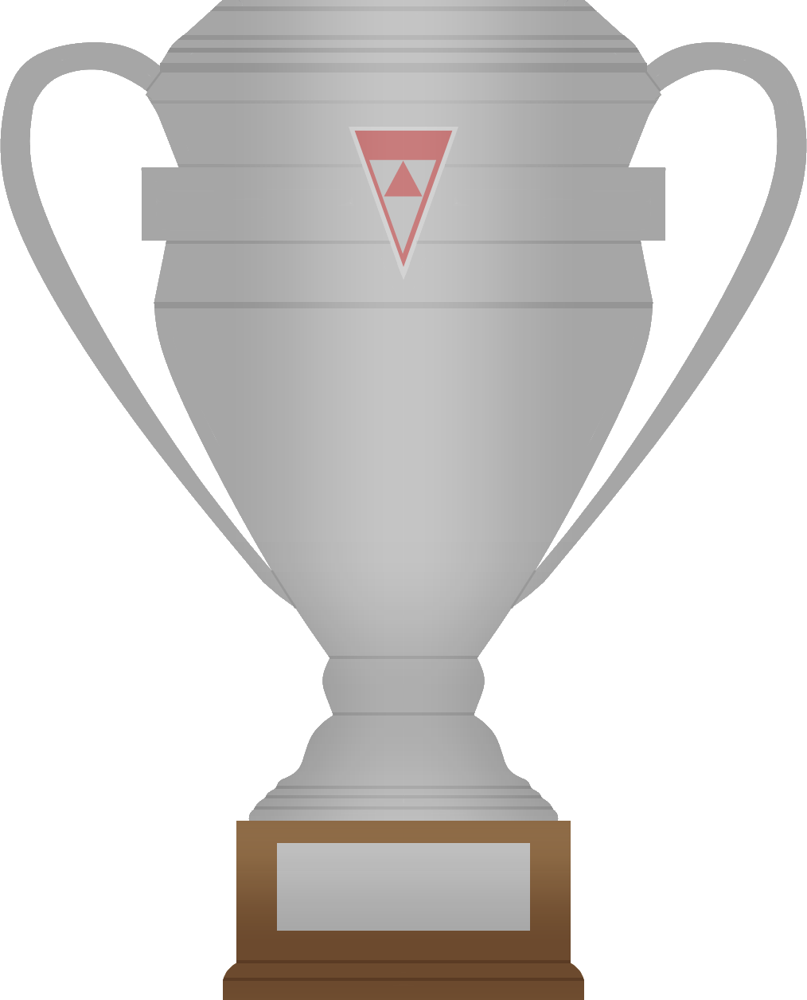
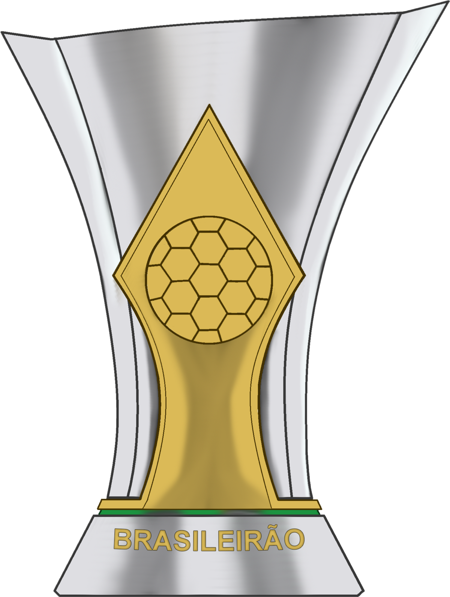

Sobre a loja
O Cruzeiro Esporte Clube é uma associação polidesportiva brasileira, com sede em Belo Horizonte, Minas Gerais. É considerado um dos maiores clubes de futebol do Brasil e da América do Sul.
O Cruzeiro foi fundado no dia 2 de janeiro de 1921, por desportistas da colônia italiana de Belo Horizonte, com o nome de Società Sportiva Palestra Itália. As cores adotadas, como não poderia deixar de ser, foram as mesmas da bandeira italiana: verde, vermelho e branco.
Reconhecido como um dos maiores clubes do futebol brasileiro e internacional, o Cruzeiro foi duas vezes vice-campeão da Copa Intercontinental de clubes e tem no seu currículo continental dois títulos da Copa Libertadores da América, dois da Supercopa da Libertadores, um da Recopa Sul-Americana, um da Copa de Ouro Nicolás Leoz e um da Copa Master da Supercopa.
No âmbito nacional, o time celeste detém quatro conquistas no Campeonato Brasileiro (uma delas como Taça Brasil) e seis da Copa do Brasil (atual recordista), sendo o único bicampeão seguido da competição.
Em âmbito regional, foi bicampeão da Copa Sul-Minas e campeão da Copa Centro-Oeste, e em âmbito estadual possui 54 conquistas. Foi a primeira equipe de Minas Gerais e primeira equipe brasileira a conquistar a tríplice coroa nacional, tendo vencido um campeonato estadual, uma Copa do Brasil e um Campeonato Brasileiro na temporada de 2003.
- 
- 